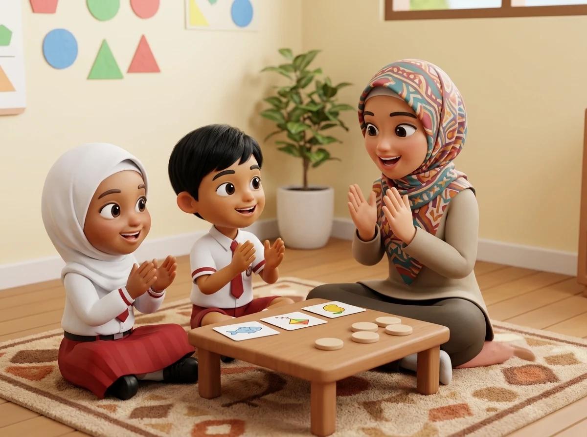

Lima huruf vokal
Setiap kata dibentuk oleh huruf. Lima di antaranya disebut huruf vokal.
- A seperti pada kata ayam
- I seperti pada kata ikan
- U seperti pada kata ular
- E seperti pada kata ember
- O seperti pada kata obor
Materi Studio
A, I, U, E, O — lima huruf yang membuka suara.
Setiap kata dibentuk oleh huruf. Lima di antaranya disebut huruf vokal.

Suara: Contoh nada
Nada contoh untuk menguji pemutar audio; bukan narasi pelajaran.
Sebutkan nama depanmu. Huruf vokal apa saja yang kamu dengar?
Langkah 1 dari 3.